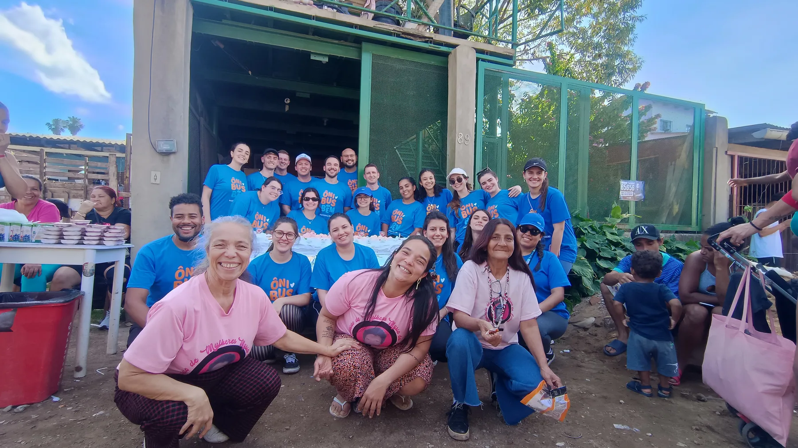
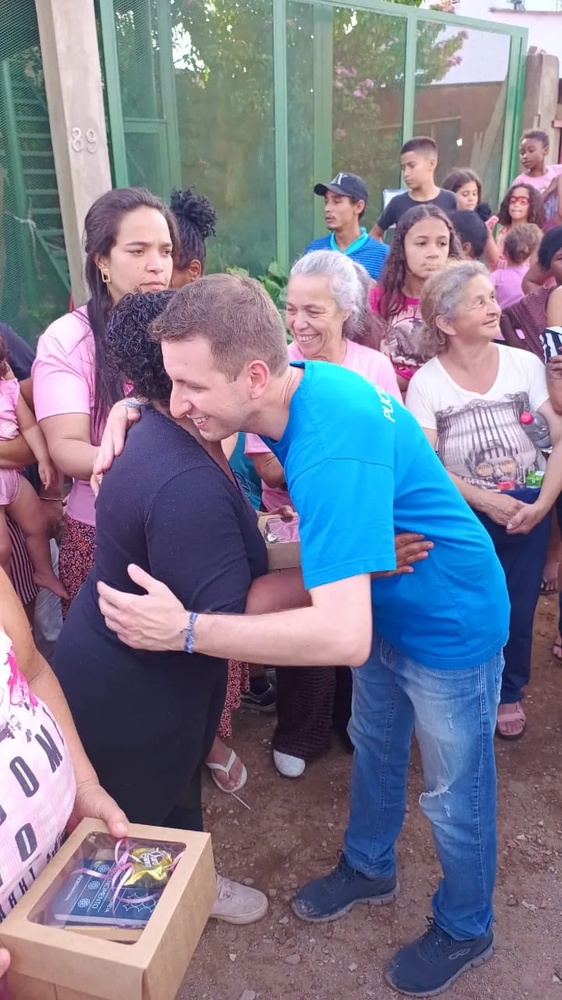
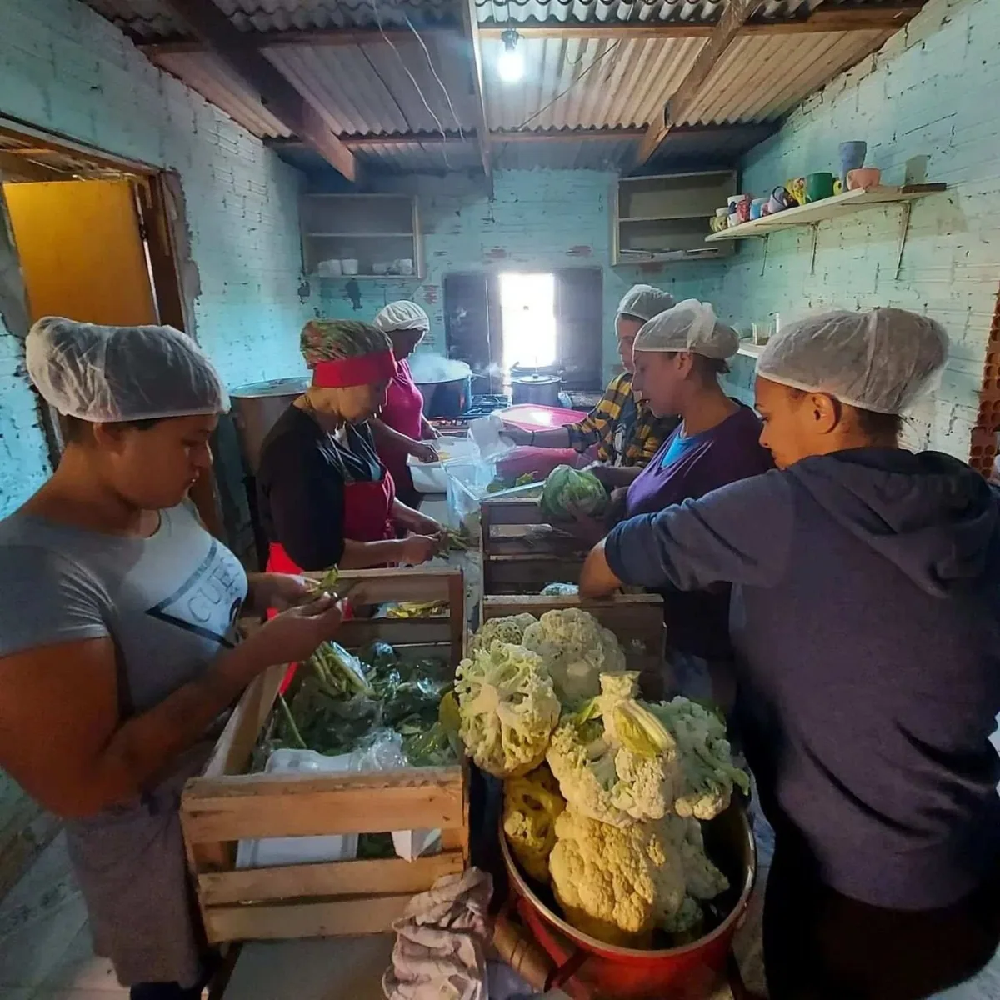

Cozinha comunitária
Refeições de segunda a sábado para moradores da comunidade e bairros vizinhos.
Cozinha comunitária · Morro da Cruz, Porto Alegre
A Associação de Mulheres Maria da Glória serve cerca de 800 refeições por dia, de segunda a sábado, e abre espaço para cursos, horta e encontros que fortalecem as mulheres da comunidade.
*Média informada pela PUCRS em novembro de 2025. Os números podem variar.


Atalhos
Escolha uma opção. Cada botão leva direto ao assunto, sem complicação.
Veja como funciona o atendimento de segunda a sábado.
Ver refeiçõesSaiba o que doar e como combinar a entrega.
Como doarDoe um pouco do seu tempo e do seu talento.
Quero ajudarEndereço, e-mail e formulário para tirar dúvidas.
Falar agoraPrimeira vez aqui? ou .

01 — Quem somos
A Associação de Mulheres Maria da Glória fica na Vila São José, no Morro da Cruz, em Porto Alegre. Nasceu do trabalho de mulheres que, durante a pandemia, se organizaram para garantir comida, água e dignidade às famílias da comunidade.
Em abril de 2022, o grupo inaugurou a cozinha comunitária. Em agosto do mesmo ano, a associação foi formalizada. Hoje, a rotina inclui refeições de segunda a sábado, cursos de corte e costura, culinária, confeitaria e economia solidária, além de uma horta e da distribuição de alimentos para outras cozinhas da cidade.
“Nutrir o corpo e fortalecer os laços do nosso bairro.”
Nossa missão, na proposta de identidade da associação
Nossa história
Durante a pandemia, o grupo distribui alimentos e articula a instalação de caixas d'água na comunidade.
Em 24 de abril, a cozinha comunitária é inaugurada e serve mais de 300 refeições no primeiro dia. Em 22 de agosto, a associação é formalizada.
Parcerias fortalecem a horta, a educação somática e a construção de um galpão multifuncional.
A 6ª edição do Ônibus do Bem leva voluntários para pintar, cozinhar e cuidar do jardim. A associação chega à marca de cerca de 800 refeições diárias.
O que fazemos
Refeições de segunda a sábado para moradores da comunidade e bairros vizinhos.
Corte e costura, culinária, confeitaria e economia solidária.
Produção, cuidado e distribuição de alimentos para outras cozinhas de Porto Alegre.
Integra o Programa Cozinha Solidária, com o código CS017254.
02 — Nossos números
Dados públicos de 2022 a 2025. Os números podem variar conforme o mês e a demanda.
03 — Refeições
O atendimento é para moradores da comunidade e bairros vizinhos. Não é preciso pagar. Os horários podem mudar, então confirme antes de sair de casa.
Rua Santa Teresa, 681, Casa 89 — Vila São José, Morro da Cruz. O atendimento acontece de segunda a sábado.
Os horários podem mudar. Envie um e-mail para angelacomunal@yahoo.com.br ou pergunte na associação.
A equipe orienta na hora. Não é preciso pagar e você não precisa se cadastrar neste site.
04 — Mural de notícias
Notícias públicas sobre a associação, reunidas para você acompanhar o trabalho da cozinha e das mulheres da comunidade.
Clique em uma notícia para ler o resumo e abrir a fonte original.
As notícias levam às fontes originais. A associação ainda não tem um mural oficial próprio; este espaço é uma prévia.
05 — Ajuda
Este site foi feito para ser fácil. Você pode aumentar as letras, ouvir o conteúdo em voz alta e fazer um passeio guiado pelos assuntos principais.
06 — Como ajudar
A associação vive de trabalho coletivo e de parcerias. Você pode ajudar com alimentos, tempo, materiais ou apoio financeiro. Escolha uma forma e fale com a equipe.
Arroz, feijão, óleo, leite, café, farinha, produtos de limpeza e embalagens ajudam a cozinha a continuar.
Combinar uma doaçãoVocê pode ajudar na cozinha, na horta, nos cursos, na comunicação ou em mutirões.
Preencher formulárioA chave PIX oficial ainda será confirmada. Fale com a equipe para conhecer a forma correta de doar.
Perguntar como apoiarEste site não divulga uma chave PIX não verificada. Nunca faça transferências para chaves que você encontrou em redes sociais sem confirmar com a associação.
Veja como a lista de necessidades vai funcionar.
Estes são exemplos de itens que uma cozinha comunitária costuma precisar. A lista oficial será atualizada pela equipe.
Voluntariado
Conte como você pode ajudar. A equipe da associação vai ler sua mensagem e responder pelo e-mail que você informar.
Não é necessário ter experiência em todas as áreas. A equipe orienta no primeiro contato.
07 — Transparência
A transparência ajuda a comunidade a confiar e a acompanhar o trabalho. Aqui estão os dados que já são públicos e os documentos que ainda serão publicados.
Quando a associação disponibilizar os documentos, eles aparecerão aqui.
Esta é uma prévia. Nenhum documento foi inventado ou publicado sem autorização.
Itens que a associação precisa confirmar antes de publicar:
Última atualização desta prévia: 10 de novembro de 2026.
08 — Visite e fale com a gente
Se você quiser conhecer, doar ou tirar dúvidas, comece por aqui. A equipe responde pelo e-mail público da associação.
Rua Santa Teresa, 681, Casa 89
Vila São José — Morro da Cruz
Porto Alegre/RS — CEP 91520-713
Refeições: segunda a sábado. Horário exato a confirmar.
Cursos: turmas e horários divulgados pela associação.
Instagram e WhatsApp oficiais ainda não foram confirmados. Não use perfis não verificados.
Localização aproximada da Rua Santa Teresa. Confirme o endereço antes de ir. Mapa: OpenStreetMap.
Mensagem
Use este formulário para tirar dúvidas, combinar uma doação ou falar sobre os cursos. O botão abre o seu aplicativo de e-mail com a mensagem pronta.
Seus dados não ficam salvos neste site. Você confere a mensagem antes de enviar.
09 — Dúvidas
Respostas curtas para as dúvidas mais comuns. Se a sua pergunta não estiver aqui, envie um e-mail.
Não. A cozinha comunitária oferece refeições gratuitas para a comunidade.
Moradores da comunidade e bairros vizinhos, especialmente famílias em situação de vulnerabilidade social.
Não. Este site é informativo. O atendimento é feito diretamente na associação.
O atendimento é de segunda a sábado, mas o horário exato ainda não foi confirmado. Envie um e-mail antes de ir.
Você pode doar alimentos, materiais ou tempo. Veja a seção Como ajudar ou envie um e-mail para combinar a entrega.
A chave PIX oficial ainda não foi confirmada. Este site não divulga chaves não verificadas. Fale com a equipe pelo e-mail antes de fazer qualquer transferência.
Os cursos de corte e costura, culinária, confeitaria e economia solidária são divulgados pela associação. Envie um e-mail para saber sobre as turmas.
Você pode ser voluntário, doar alimentos e materiais ou ajudar em mutirões. Toda ajuda é bem-vinda.
Ainda não. Esta é uma prévia proposta para a associação. O conteúdo está em validação e será atualizado pela equipe.
Ainda com dúvida?
Enviar e-mailVamos juntos?
A cozinha existe porque muitas mãos se juntaram. Este site também pode ser um ponto de encontro entre a associação, a comunidade e quem quer ajudar.
Use as setas do teclado ou os botões. Pressione Esc para sair.